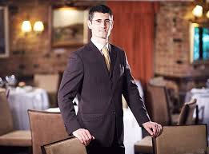
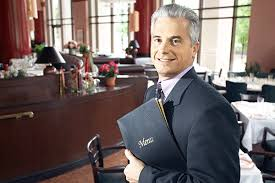
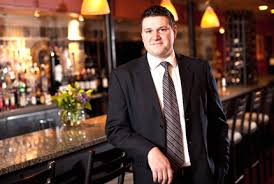

Milano's head chef Antonio is a well accomplished leader who drives the team to strive for greatness when it comes to the start of every service and maintaining
the high standards that are set for all of the chefs. This chef has also worked at gordon ramsays Savoy Grill in England where he learned lots of new
techniques and skills that he was able to bring back to Ireland and pass down onto our team. His signature dish is one passed down to him by
gordon ramsay himself, the classic beef wellington.
Sous chef nick
Nick has been working with milanos for 5 years now after studying under some
great chefs all around europe where he was able to pick up lots of new skills and really train his palette. He now focuses his work on helping Antonio
try to come up with new ideas to add to our ever growing menu in milanos. He is also in charge of making sure fresh bread and deserts are made in house
every day and are up to standard.
Sous chef Archie
Archie is a young new chef with a big drive to make a name for himself in the cooking
community. Known for posting some of his best dishes on his social media platforms and holding teaching classes where he takes new chefs and gives them
the basic skills needed to be able to get themselves a job in any type of cooking based on their cooking/baking skills. This self taught chef really drives
the team day in day out.
Management



Chief Financial Officer David Wallace
Regional Manager Michael Scott
Assistant to the Regional Manager Dwight Schrute
CFO David Wallace
David Wallace is a hard working Leader. He is in charge of many Milanos across ireland but is
Mostly spending time in our branch as it is closest to home. He maintains good public relations by Treating his staff with respect. He graduated from
TUDublin with a degree in accounting and finance and has gone on to do wonders for milanos across the board.
Regional Manager Michael Scott
Michael is a hands on manager who makes sure Work is up to standards day in day
in day out. While maintaining these standards Michael would rather think of himself as everyones friend rather than their boss and this is why good industrial
relations is such a big part of Michaels management style. Michael has a plan for every problem that arises when it comes to milanos on a day to day basis.
Assistant to the Regional Manager Dwight Schrute
Dwight is the assistant that will do anything for his job. He is passionate about
everything that his job title entails.He has been with milanos for around 5 years now and has had no regrets and only dreams about being able to move up
in the company one day. His work ethic is what really makes everyone in the resturaunt happy to be working there and then drives them to work as hard as he does.